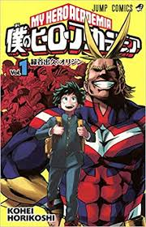
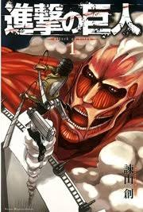
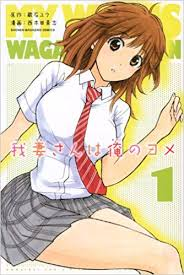
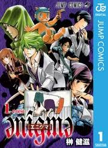
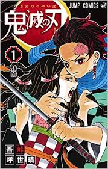

堀越耕平によるヒーローコミックス。誰もが「個性」と呼ばれる特殊能力を持つ世界で生まれつき能力を持っていないいわゆる「無個性」の主人公 緑谷出久が困難に立ち向かい最高のヒーローになるまでを描いた物語。作中様々な出会いや別れ、多種多彩な敵との闘い、果たして彼の運命は

突如現れた「巨人」によって自由が奪われた壁の中の人々とその中の一人主人公エレン・イェーガー。自由のために巨人に立ち向かうエレンとその仲間たち、次々に倒れていく仲間のたましいを胸に今日も戦う。

平凡な生活を送るさえない高校生の主人公 青島等。突如タイムスリップした先には学校で一番の美女 我妻亜依と結婚している自分。タイムスリップ先では様々な未来を見る友人たちの望まれない未来や我妻さんとの結婚を阻むほかの女性。彼の運命やいかに。

主人公の灰葉スミオには「夢日記」という未来を予知する能力があった。ある日母親の失踪をきっかけにある事件に巻き込まれる。eテストはスミオと同じような特殊能力を持つ人が集められ異世界の学校を舞台の脱出劇が描かれる。脱出しても元の世界にはある問題が・・・

大正時代 日本。人を食らう人食い鬼が実在する。主人公の竈門炭次朗はある日突然家族を鬼に食い殺されてしまう。唯一息のある妹の禰豆子は原因不明ながら鬼へと変貌してしまう。鬼となった妹を人間に戻すため鬼と闘いながら仲間たちと協力して旅をする。
